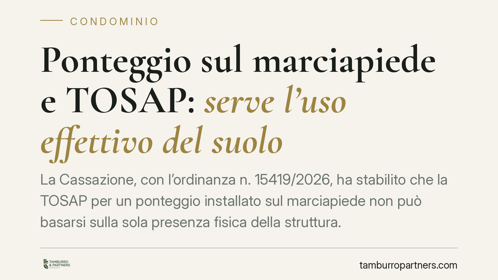

Ponteggio sul marciapiede e TOSAP: serve l'uso effettivo del suolo
La Cassazione, con l'ordinanza n. 15419/2026, ha stabilito che la TOSAP per un ponteggio installato sul marciapiede non può basarsi sulla sola presenza fisica della struttura. Occorre verificare se e quanto quell'occupazione sottragga realmente il suolo all'uso della collettività. Una precisazione che offre a condomini e imprese un argomento concreto per contestare avvisi di pagamento automatici e non motivati.

Il caso
Durante i lavori su una facciata condominiale, il ponteggio aveva invaso una porzione di marciapiede. Il Comune ha richiesto il pagamento della TOSAP — la Tassa per l'Occupazione di Spazi ed Aree Pubbliche — calcolandola sulla base della sola superficie coperta dalla struttura.
Il contribuente ha eccepito che la tassa presuppone un'occupazione che limiti concretamente l'uso pubblico del suolo, non la semplice presenza di un'impalcatura. La Cassazione gli ha dato ragione con l'ordinanza n. 15419/2026.
Inquadramento normativo
La TOSAP è disciplinata dal Capo II del D.Lgs. 507/1993. Il presupposto del tributo, ai sensi dell'art. 38, è l'occupazione di spazi e aree pubbliche appartenenti al demanio o al patrimonio indisponibile dei Comuni e delle Province.
La parola chiave è "occupazione". La Cassazione chiarisce che non ogni ingombro fisico integra un'occupazione rilevante ai fini del tributo. La tassa colpisce la sottrazione del suolo pubblico alla fruizione della collettività: è questa sottrazione — l'uso particolare e differenziato rispetto a quello comune — a giustificare il prelievo.
Ne deriva una conseguenza pratica: l'ente impositore non può limitarsi a constatare che il ponteggio esiste e a misurarne la proiezione a terra. Deve verificare l'incidenza effettiva sull'uso pubblico. Un ponteggio che lascia transitare liberamente i pedoni, o che insiste su un'area marginale non destinata al passaggio, incide in modo diverso rispetto a un'impalcatura che chiude l'intero marciapiede.
Perché la decisione conta
La pronuncia sposta il baricentro dalla logica automatica dell'occupazione presunta a quella dell'occupazione provata. Non basta che il suolo sia pubblico e che qualcosa vi insista sopra: serve dimostrare che l'uso collettivo ne risulti concretamente compromesso.
Per i condomìni che affrontano interventi di manutenzione straordinaria — rifacimento di facciate, cappotti termici, ristrutturazioni spinte anche dagli incentivi edilizi degli ultimi anni — il tema è tutt'altro che teorico. Il ponteggio resta montato per settimane o mesi e la TOSAP può incidere in modo significativo sul costo complessivo dei lavori.
Implicazioni pratiche
Il principio apre spazi di contestazione quando l'avviso di pagamento risulta motivato solo con la superficie teorica del ponteggio. Un atto impositivo che non dia conto dell'incidenza reale sull'uso pubblico presenta un profilo di debolezza.
Attenzione, però: la decisione non esclude a priori la debita della tassa. Afferma che il presupposto va accertato in concreto. Dove il ponteggio occupa stabilmente un tratto di marciapiede, impedendo o deviando il transito pedonale, la TOSAP resta dovuta.
Va inoltre considerato che molti Comuni hanno sostituito la TOSAP con il canone unico patrimoniale (CUP) introdotto dalla Legge 160/2019. Il principio della Cassazione, fondato sulla nozione di occupazione effettiva, offre comunque criteri interpretativi utili anche in quel diverso quadro.
Cosa fare in concreto
- Verificate la motivazione dell'atto. Controllate se l'avviso si fonda sulla sola superficie del ponteggio o se dà conto dell'effettiva incidenza sull'uso pubblico del suolo.
- Documentate lo stato dei luoghi. Fotografate e, se possibile, fate verbalizzare la situazione del marciapiede: larghezza residua, transito pedonale garantito, eventuale passaggio protetto sotto l'impalcatura.
- Richiedete il titolo autorizzativo. Conservate concessione di occupazione e relativi atti, inclusi i pareri della Soprintendenza ove l'immobile sia vincolato: delimitano i termini dell'occupazione assentita.
- Rispettate i termini di impugnazione. Gli atti impositivi vanno contestati entro i termini di legge davanti al giudice tributario. Agite tempestivamente per non perdere la facoltà di difesa.
- Consultate un professionista prima di pagare. Un'analisi preliminare dell'atto consente di valutare la sostenibilità della contestazione ed evitare adesioni affrettate.
In sintesi
La presenza di un ponteggio sul marciapiede non fa scattare automaticamente la TOSAP. Il tributo richiede un'occupazione che comprima realmente l'uso pubblico del suolo, e tale compressione va accertata caso per caso. Un principio che restituisce centralità alla verifica concreta e offre strumenti difensivi a chi riceve richieste di pagamento standardizzate.
---
*Contributo informativo a cura di Tamburro & Partners - Avv. Giuseppe Tamburro. Non costituisce parere legale.*
Ogni condominio ha una storia a sé.
Se gestisci un'amministrazione e vuoi un confronto su una specifica questione condominiale, scrivi allo studio. Ti rispondiamo entro un giorno lavorativo.